C
Library Design Guidelines
This appendix contains guidelines that will help you optimize your library to reduce die size and maximize the effectiveness of the place-and-route software.
A properly designed cell library is one of the most important factors in obtaining optimum results from InnovusTM Digital Implementation System (Innovus). A poorly designed library can lead to increased run times, undesirable placements, poor routing, and ultimately, less than ideal performance.
Although the following suggestions and guidelines are written with Innovus in mind, many also apply to any advanced place-and-route tool. It might be difficult, if not impossible, to incorporate all of the following guidelines into your library: the goal, however, is to adhere to as many of these features as possible in your library design.
Before detailing the library development guidelines, it is important for the designer of the library to keep in mind that minimizing cell sizes does not necessarily minimize the total die size. In fact, some of the suggestions in the following pages will cause an increase in the size of the individual cells, but will decrease the overall die size due to reductions in routing among the cells.
This appendix does not detail the procedures for creating or validating your library. The main sections covered in this appendix are:
- General Guidelines
- Determining Routing Grid Pitch
- Modeling Pins
- Blockages
- Cell Porosity and High Density
General Guidelines
This section describes the models the software uses and gives you some general tips on the best ways to model the cells in your library.
General Rules for All Cell Types
- Every logical pin must have a physical description that contains at least one port. Each port must have at least one physical geometry.
- All objects belonging to the cell must be inside the cell boundary.
- In some technologies, power and ground pins extend to the edge or outside the boundary.
- The edges of pins and blockages must be at least one half the minimum spacing away from the cell boundary.
- Minimizing cell size does not necessarily minimize die size. It is better to increase the cell size slightly to optimize routing than to minimize cell size without keeping routing considerations in mind.
Designing Standard Cells
This section provides suggestions for optimizing your design at the library level or inter-cell level, to ensure that the individual cells work together as well as possible.
Optimize Cell Widths
-
Avoid creating standard cells of the same type that vary greatly in width.
This results in unbalanced row lengths. In general, the width of the largest standard cells should be no more than five or six times the width of smallest standard cell of the same type in your library.
If you need more complex cells, it is better to double or triple the height of the cells and keep a reasonable cell width. Innovus can optimize the area utilization by mixing single- and multiple-height cells in the core area without creating gaps around multiple-height cells. -
All cell widths should be a multiple of the pin grid.
If a cell width is not a multiple of the pin grid, even though its pins are on the grid, the cell will cause the cells adjacent to it to be misaligned with respect to the grid. This makes having pins on grid useless because the misalignment of the other cells causes their pins to be off-grid, thereby using more horizontal or vertical tracks than needed.
Making the cell width a multiple of the pin grid can increase the size of the cell, but will yield a reduction in the total area of the die. - Placement should also be done on a placement snap grid so that the edges of the cells are also on the grid.
Optimize Cell Heights
Optimal cell heights vary depending on the row style your design uses.
Of the four styles described below, using the second style is highly discouraged. You can use any of the other three for Innovus. The last two row styles typically result in the smallest die sizes.
-
Style 1: Standard height cells in single cell rows
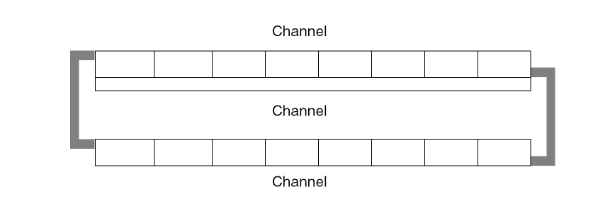Typically, these designs have two or more layers. Cell height is limited. You can have power sharing if you design it in. Power sharing can reduce die size by reducing the number of channels. -
Style 2: Variable height cells, in single cell rows
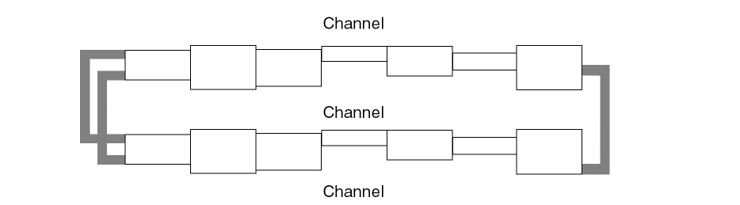These designs are usually two-layer designs. They are not efficient for three or more layers. They allow cell heights to vary by about 30%, but do not allow for power sharing. -
Style 3: Single-height and double-height cells, in double cell rows
These designs have two or more layers. Single-height or double-height cells are arranged in double rows. This kind of design is meant for power sharing. -
Style 4: Multi-height cells in a sea-of-cells design
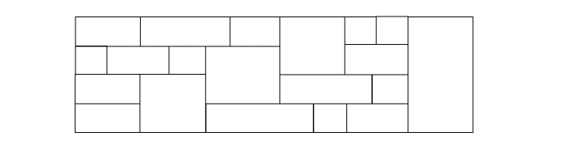These designs feature three or more layers. They do not allow two-layer routing and have no channels, so you cannot use a channel-based router. You can have single-, double-, or multi-height cells. This kind of design permits the most efficient power sharing of both power lines.
Optimize Porosity
-
Medium and large cells should have the same porosity, primarily in M2.
This means that the percentage of free M2 tracks should be the same for all the medium and large cells in the library. If the porosity is not uniform, the router might have trouble finishing if cells with low porosity are placed near each other.
For small cells (one to three tracks wide) you can let the placer optimize porosity by spacing them apart where necessary. However, careful design can improve routability significantly.
For example, you can maximize M1 left/right access to pins on small cells, as shown in the following figure. This optimizes M2 porosity by maximizing the amount of routing done on M1. Small cells often have this kind of routing.
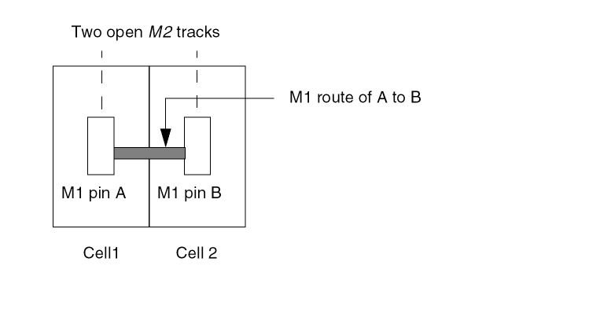You can also design small cells to have multiple accessible pins or open grids so that you can get Z-shape M2 routes where possible, as shown in the following example.
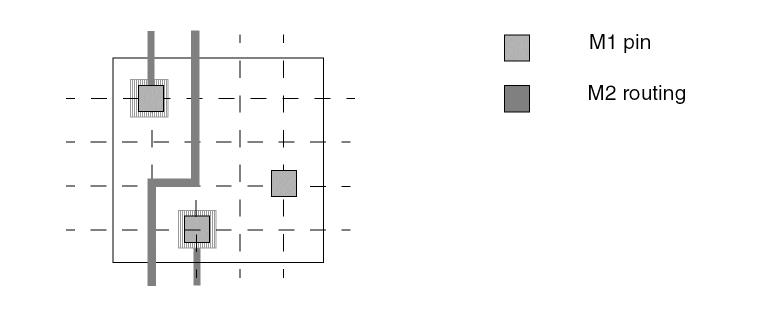
Designing Pins for Cells
This section contains guidelines for designing pins so that you maximize the routability of the cells and improve the run time and memory performance of the router. The more porous the design, the easier it is for the router to make connections.
Placing Pins on the Grid
Every pin should cover at least one grid intersection because the software connects most efficiently to pins at grid intersections. If you have off-grid pins, the software creates a pseudogrid through the center of each off-grid pin.
Use the following guidelines to optimize pin placement:
- Place pins on-grid wherever possible.
- Ensure that off-grid pins follow spacing rules by using the pseudogrid point at the center of the pin geometry.
- Center the pin via on the routing grid for its layer.
- Place special pins in such a way so that they do not obstruct routing on an adjacent track. You can place special pins off-grid for this.
Innovus has gridless routers but they handle gridded pins better than off-grid pins. A pin is considered to be on-grid if it meets the following criteria:
- The pin rectangle is centered at the grid intersection.
- The pin rectangle encloses the grid intersection point on all four sides by half the minimum metal width of that pin shape layer. The grid intersection is from the x and y routing grid pitch for that layer. The router routes to the pin rectangle only at that grid intersection.
- The router only routes to the center of the off-grid pin port rectangles if this is legal.
The following figure shows a LEF standard cell with shapes similar to layout data.
Pin A has several off-grid shapes and one on-grid shape. Pin B has two off-grid polysilicon pin shapes. Pin O has one on-grid shape. The off-grid shapes slow down the router and lead to inefficient routing. Further, if the spacing rules for this example did not allow M1/M2 vias to be placed on pin A, the router would not be able to connect to Pin A. This could result in an inefficiently routed design.
Off-grid pins can affect your design in a number of ways. Some of these are listed below:
-
Large die size
The router creates jogs to compensate for pins that are not aligned. This forces the channels to expand vertically and increases the die size.
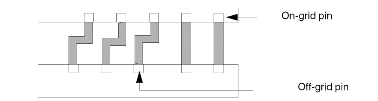 -
Overconstrained design
The more constraints there are, the harder it is for the router. The following figure shows how one off-grid pin increases the number of constraints.
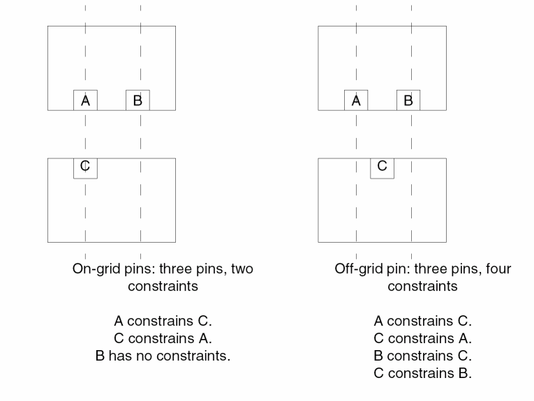 -
Longer run-times
This design slows down the router significantly because the router is more constrained. Each off-grid track can interfere with adjacent tracks. -
Optimistic global router results
The global router might not recognize off-grid pins as blocking the routing track and, as a result gives you optimistic results.
Handling Special Pins
Special pins are pins routed by the special net router instead of the final router. Special pins have different shapes, depending on their function. On cells, you can have feedthrough or abutment special pins.
- Non-interference with adjacent grid lines.
-
Define special pins in the
SPECIAL NETSsection of the DEF file. - Place all power and ground feedthrough and abutment pins at the same axis on opposite sides of the cell.
- Position the power and ground feedthrough or abutment pins so that they align with corresponding pins in other cells.
- Avoid creating power and ground pins in M2, because M2 within the cell makes it harder to route over the cell.
- Define a shape property for power and ground pins with the value set to either feedthru or abutment.
- Set the same y offset for power and ground pins from the cell origin so that the FollowPins command works properly. You can specify the origin in the LEF file or use the default, which is the lower left corner.
Maximizing Routing Resources
The more routing resources you have available, the easier it is for the router to connect. You must maximize the resources in your most constrained layer. In three-layer designs where M2 is vertical and M1 and M3 are horizontal, M2 is typically the most constrained layer.
The following are some suggestions:
-
Maximize pin accessibility.
Make cell pins as accessible as they can be by declaring the complete geometry of the pin as a pin. This will allow the router to connect to the best location on the pin as it sees fit, rather than forcing it to connect to a particular point.
Also, avoid having geometries on the same layer close to and around the pin, in effect, blocking it. This makes the router unable to make a connection to the pin.
Special care should be taken not to block access to pins through vias. For example, avoid M2 geometries too close to a M1 pin such that M1 to M2 via cannot be dropped in order to access the pin on M2. -
Stagger pins in the x and y directions.
Staggering pins provides additional vertical routing resources, as shown in the following figure:
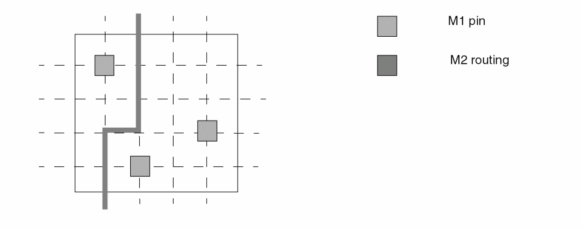If two or more pins are aligned vertically, then the vertical track going through the pins can become blocked, forcing some of the horizontal routing resources to be used to connect to the pins.
By staggering the pins in the vertical direction, especially at a pitch equal to integer multiples of the pitch of the vertical routing track, a higher degree of flexibility is given to the tool to connect to the pins in either direction. -
Minimize the number of geometries within the cell that are on the constrained layer.
Any geometry on the constrained layer within the cell becomes a blockage to routing in that layer. For three-layer designs where M2 is the vertical layer, you can maximize routing resources by creating internal cell geometries in M1 and polysilicon, and leave M2 and M3 for routing. -
Allow extra routing resources in the constrained layer.
In libraries for gate isolation base arrays that might be congested in M2, you can add extra M2 routing resources as padding. For example, a two-input NAND gate might be three tracks wide with every track obstructed by a pin. You can model this as at least four tracks wide to provide an extra track for routing. -
Do not add pieces of metal to provide extra connection points.
In some libraries, you add a piece of M2 to a pin to provide the router with an extra connection point if M1 is blocked. This is counter productive because unused M2 areas become blockages that limit the flexibility of the router. You do not have to add extra metal, because the router can drop vias to the pins.
Designing IO and Corner Cells
Abstract Generator uses the cover blockage model for IO cells, preventing the router from routing over IO cells.
Abstract Generator uses the same model for generating abstracts for corner cells.
Designing Blocks
-
Maximize porosity for over-the-block routing.
Leave unobstructed areas for over-the-block routing. Minimize the number of M2 and M3 geometries inside the block, so that these routing resources can be used to route over the block. -
Create power rings around large macro blocks.
It might be easier to accommodate power routing around a macro block if you create a power ring around it and connect the internal buses to the ring. -
Pad around block boundaries.
It is always good to have extra routing resources around a block, because this area can get congested. Leave extra room around the corners. - Create as much open vertical M2 space as possible on the left and right sides.
- Create as much open M1 and M3 space as possible on the top and bottom.
-
Space pins apart by at least line-to-via spacing.
If your design requires line-to-line spacing, add flare outs to line-to-via spacing even if this sticks out from the macro, as shown in the following figure.
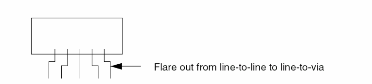
Determining Routing Grid Pitch
This section discusses the various guidelines associated with determining routing grid pitches and recommended pitch setting strategies.
General Guidelines for Setting Pitch
You must define horizontal and vertical grids for routing on every routing layer. To do this, you must do the following:
-
Select the preferred and non preferred routing direction for each layer.
One common convention is HVH, where the preferred direction for routing M1 and M3 is horizontal and the preferred direction for M2 is vertical. -
Define a minimum pitch for each layer in the preferred direction track for that layer.
This pitch must be at least line-to-via distance. Anything less will result in low utilization rates and longer run times, because the router will not be able to place vias next to wires on adjacent tracks.
The following figure shows line and via definitions for track pitch:
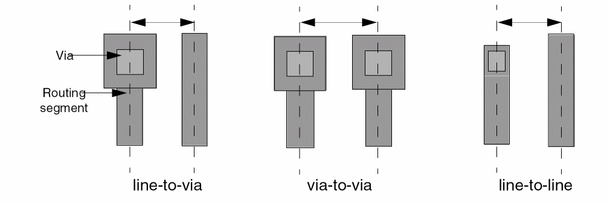
The most common track pitch is line-to-via, because it is the minimum pitch in which you can place a via next to a route. It is calculated as follows:
half the metal width for the layer + the metal spacing + half the via.
-
Assign tracks in the non-preferred direction for every routing layer.
Align these tracks with preferred direction tracks on adjacent layers, even if this is different from the track pitch of that layer in the preferred direction. Lining up the tracks lets the software create jogs at locations where vias can be placed or where pins can be connected to consistent xy locations. -
Allow for diagonally adjacent vias.
Increase spacing to allow vias to be placed diagonally adjacent to each other. This might make the orthogonal spacing slightly more than line-to-via, but will reduce overall die size, because lack of via resources causes more congestion and longer routes to route around congested areas.
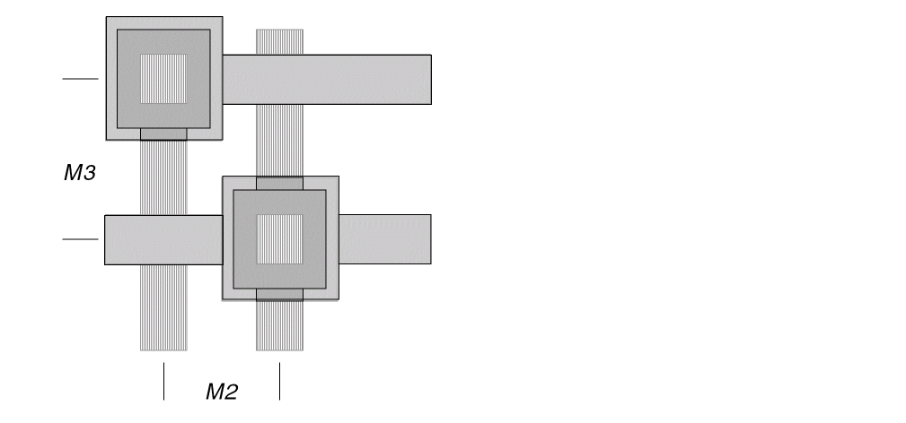 -
Maximize total routing track resources
If you have an HVH layer scheme, keep M1 and M3 spacing to the minimum, and make any needed spacing increases in M2. Minimizing spacing on two layers (M1 and M3) gives you more total routing resources than minimizing spacing on one layer by the same amount.
To a certain extent, the placer also adjusts for different horizontal and vertical demands on the routing resources. You can also use a rectangular die instead of a square one to maximize routing resources. -
Use rectangular vias if that allows you to have smaller track pitch and more total routing resources overall.
Ensure that the rectangular via and pitch still allows diagonal vias.
Normally, you maximize your total routing track resources. However, if one direction is constrained, you might want to maximize your resources in that direction.
For example, take an HVH library with the same line-to-via spacing for all three layers and no diagonal vias. To allow for diagonal vias, increase the spacing for the horizontal layers (M1 and M3) to maximize the vertical routing resources on M2. This might not optimize the overall routing resources, but it reduces the congestion on the critically constrained M2 layer.
Alternatively, if the cells have no free M1 tracks and the M3 pitch is much larger than M2, you can increase the spacing on M2.
Another technique for handling an overconstrained layer is to use a die aspect ratio that minimizes the routing demand for that layer.
Setting Pitch for Layers with the Same Preferred Direction
- Align the tracks on the layers as much as possible
-
If you cannot align the tracks, keep the pitch ratio between them simple, for example, 1:2 or 2:3.
The following figure shows a ratio of 2:1 between M1 and M3. The figure shows preferred direction tracks. Non-preferred direction tracks should be the same.
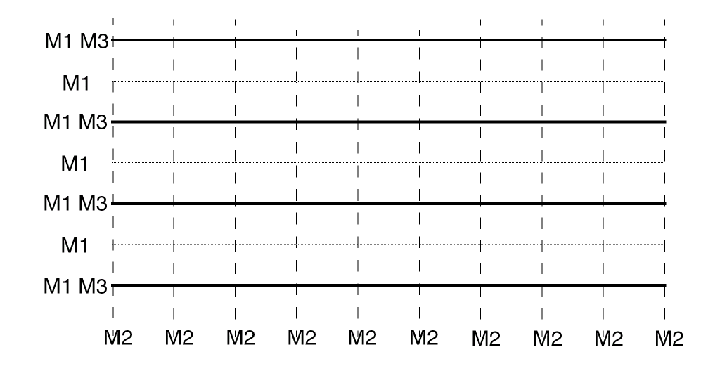
If M1 and M3 have complex ratios, such as 11:8, you can run into the following problems:
-
If you have inter-layer spacing rules between cut layers, vias will often be limited on two tracks instead of one.
In the following figure, V12 prevents the router from dropping V23 vias above and below it on the M3 tracks. If the M1 and M3 tracks were aligned, the via (V12) would block only one V23 via.
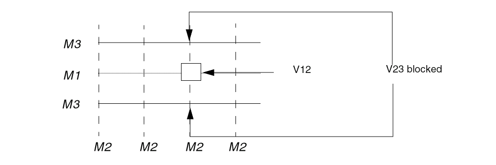 - This design can seriously affect memory allocation at run time. With a ratio of 11:8, you must create a non preferred M2 track for every M1 and M3 track. Because these tracks align only at every eighth track, the result is more M2 tracks than required with a 1:1 ratio, and this affects memory allocation.
- With a ratio such as11:8, your choice of cell heights is limited. This is because the cell height should be a multiple of the common denominator of the track spacing.
- If your technology allows center-stacked vias, a ratio like 11:8 will produce few.
Setting Pitch for Via Stacking
-
If two metal layers have the same routing direction, make the relationship one of the following: 1:1, 1:2, 2:3, or 3:4.
Vias cannot be stacked where M1 and M3 are not coincident. You can only stack vias at grid intersection points where all layers in the stack exist. If the relationship is not one of the above, it is difficult or impossible to place vias.
If your process allows stacking of vias, you must use one of the above ratios. To stack vias everywhere, use 1:1. This is described in the following figure.
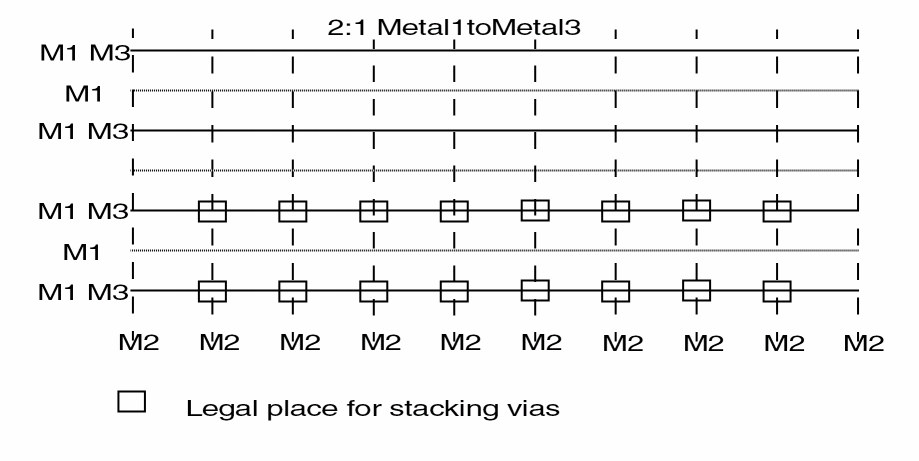
Designing a Gridded Library for Innovus
Use the following general guidelines to simplify the internal data structures that Innovus uses during routing (assuming horizontal rows):
-
Make cell width a multiple of the vertical routing track pitch.
Cell widths should be a multiple of the vertical routing pitch if there is only one vertical routing layer. -
Make cell heights a multiple of the horizontal routing layer pitch.
If there is more than one horizontal routing layer, use a multiple of the greatest common denominator of the horizontal track spacing. -
Create pins that cover routing grid intersection points by half the minimum width.
The CPU time increase for on-grid versus off-grid routing varies from 20% to 30%, depending on how many off-grid pins are in the library. The quality of route is not significantly degraded with off-grid routing. -
Make blockages cover grid intersection points.
Blockages and pins should cover grid intersection points even after the blockages are fractured.
The routers can use any grid intersection point not covered by a pin or blockage shape.
Converting an Existing Library
The following guidelines apply if you have to create a routing grid for a library that was not designed with a routing grid in mind, or for a library that has a routing grid designed for an older technology that needs to be reduced.
- Calculate all minimum line-to-via and via-to-via pitches for all the layers. Calculate minimum xy distances for all diagonal vias.
-
Determine the routing pitch and offset for each layer by examining some cell layouts from the existing library.
You can get the M2 preferred pitch (x coordinate) from the pin center-to-center distance of layout shapes. Getting the M1 pitch (y coordinate) might be harder because many cells in older libraries were not designed with a y pitch in mind. -
If the designed x or y pitch is larger than the line-to-via minimum, reduce the pitch.
It might be easier to reduce the y pitch than the x pitch. Reset cell boundaries to be a multiple of the new pitch. -
Define different M1 and M3 pitches to maximize routing resources.
Remember to use simple ratios. The cell boundary must be a multiple of both layers. - Use rectangular vias for routing if that allows the grid you want.
Modeling Pins
Deciding Pin Layers
- Avoid creating M2 geometry on pins. This blocks routing for other nets if the M2 geometry is not required.
- Create an M2 pin only if the pin is accessible only by M3. That is, it is blocked completely with M1 and M2.
Power to Blockage Violations
A common library problem occurs during the power and ground connections by the special router used in Innovus.
If the blockage does not keep a legal clearance to the power and ground pins, as shown in Figures (a) and (b) below, false violations are highlighted that make it difficult to identify real violations.
Virtual Tracks
Each off-grid rectangle must be made on-grid in order for Innovus to recognize it. This is accomplished using virtual tracks.
Certain libraries require the creation of thousands of virtual tracks because of the presence of off-grid geometries, which must be avoided during routing. The following figure shows virtual tracks in use.
Off-grid routing on the virtual track might cause violations with fractured pin or blockage rectangles.
When virtual tracks are present, the router will use either virtual tracks or regular tracks, depending on which are closest.
Centering On-grid Pins
If off-grid pin access is not allowed, you should center pins on grid intersection points. If a pin shape touches a grid intersection point, it is considered on-grid.
If your pins touch grid points, and you do not allow off-grid routing;
- The router will recognize it as needing to be routed, and will avoid it when routing other nets.
-
Depending on the pin shape and position, the router might be unable to route to the pin, or make an efficient connection.
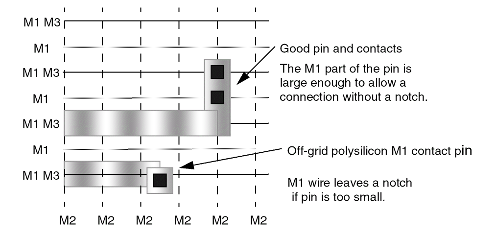
Routing problems can be caused by incorrectly defined on-grid pins. These problems are sometimes referred to as off-grid problems. The router and verify geometry (in Innovus) do not consider a notch a violation. These violations are found by the samenet check.
Pins with Potential Routing Problems
-
The pin geometry interferes with the adjacent grid without covering it.
The problem with off-grid pins that do not cover grid points but are too close to allow routing, is that the global router will not see the track as obstructed. The global routing scores will not consider that the track is blocked by the off-grid pin and will give you over-optimistic results. -
Vias (in pins) are not centered on the routing grids for its layers.
If off-grid pins exist, and the router has been set to allow off-grid pins, then grids are created by the router. Any pin that does not cover the routing grid with enough area to place a via is considered off-grid, and a track is created through the center of the pins. Off-grid tracks will slow the router by requiring more memory. Routing is slower because wires on each off-grid track interfere with adjacent on-grid routing. -
Special pins need not be on-grid, but should follow blockage rules.
The following figure shows potential routing problems.
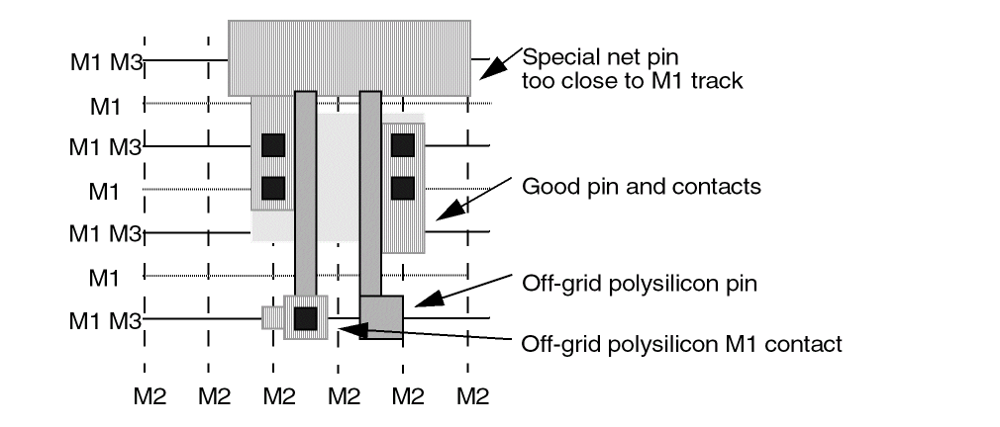
Blockages
All geometries on routing and cut layers that are not associated with a pin are identified as blockages by Abstract Generator. A blockage is a keep-out area for any routing layer or cut layer.
You can use Abstract Generator to create blockages. You can specify the Geometry Specification for the layers on which the blockage is to be created. Alternatively, from Abstract Generator you can open any one of the layout, pin, extract, or abstract cellview in VLS L and edit them to add blockages. For information about adding blockages by using VLS L, see "
Blockages and Wiring Density
Use the following guidelines when blocking a routing layer:
-
If all of the routing is blocked for a layer, then create a single blockage over the area instead of many separate blockages.
This simplifies the LEF file generated for the abstract. - When drawing a blockage over the whole cell, leave half a minimum spacing between the blockage and the boundary.
-
If there are free tracks available, leave them open in the abstract.
This can increase wiring density.
In the following figure, the blockages in the cell on the right allow M1 routing to the pins.
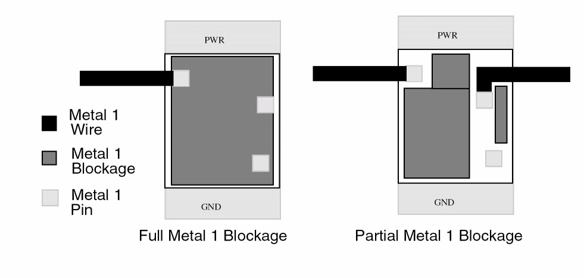
Blockages and Pin Accessibility
Pins are accessible from the side if they are less than one routing grid distance from the blockage edge, and the command FROUTE.ALLOW.PINACCESS.ATBLOCKAGEEDGE is set to TRUE.
Note: The command FROUTE.ALLOW.PINACCESS.ATBLOCKAGEEDGE controls FRoute only, and not the line probe router.
The line probe router (LPR) will not route to any pin that is surrounded by a blockage on that layer.
In the following figure, pins are accessible by routing over the cell with M2, and dropping a via to M1 (Via12 is a via from M1 to M2).
If your library has blockages defined as shown above, you must route the clock tree with GRoute and FRoute, and not CRoute Balance.
On-grid Versus Off-Grid Blockages
On-grid blockages completely cover the grid points that are interfered with.
Slivers that result from fracturing can cause edge-to-edge spacing violations. This happens when a sliver is off-grid, as shown on the right of the figure below. The sliver covers no grid intersection points, but interferes with routing.
The blockage on the left covers three grid points and effects only one vertical routing track. This is an on-grid blockage. It allows a via to be placed without violations. The blockages on the right cover three grid points and interfere with two vertical routing tracks. The sliver also causes an edge violation with the via. The sliver is an off-grid blockage.
Libraries with no off-grid blockages allow the best routing density. The final router runs faster if all blockages within cells are on-grid.
Cell Porosity and High Density
Cells are more porous if there is free routing resource to route over the cell. A porous library allows high core utilizations.
Routing Pitch
The pitch you choose affects the routing density. The pitch is usually a value between via-to-via spacing and line-to-via spacing.
Via-to-Via Spacing
This is the spacing required for adjacent vias and is illustrated in the figure below.
Line-to-Via Spacing
The line-to-via dimension is the distance that the routing pitch requires in order to legally place a via on the track next to a wire (line). This is illustrated in the figure below.
Adjusting the Routing Pitch
Most processes allow diagonal vias when the routing pitch is set to line-to-via. In some cases it is necessary to adjust the vertical routing pitch to allow diagonal vias. This adjustment is referred to as expanded line-to-via spacing.
Expanded line-to-via pin spacing gives better routing density than via-to-via spacing. Use via-to-via spacing only if your process requires large vias. This is illustrated in the figure below.
If diagonal vias are not allowed when using the line-to-via routing pitch, expand the routing pitch just enough to make diagonal vias allowed. The amount that the pitch must be expanded depends on the cap size of the vias.
When diagonal vias are placed, the spacing (d) must be greater than the M1-to-M1, M2-to-M2, and M3-to-M3 spacing rule, depending on the layers in the via.
Pin Spacing
Pin spacing is usually more than line-to-via spacing and less than via-to-via spacing. Start with line-to-via spacing and, if necessary, increase the pin spacing to allow access to both pins by dropping vias (adjacent vias).
Normally, the maximum spacing necessary is via-to-via spacing.
Single Grid Pin Spacing
A single grid pin is a pin with only one port that covers only one grid point.
Use pin spacing so that it is legal to drop vias on all pins, as shown in the following figure.
If you place single grid pins on orthogonally adjacent grid points, you must use via-to-via routing pitch; otherwise, the router might not be able to access the pins.
If you place single grid pins on diagonally adjacent grid points, your routing pitch must be able to accommodate diagonal vias.
Pin Staggering
If you have one vertical routing layer, and line-to-via pin spacing, you should stagger the pin placement, as shown in the following figure.
If pins are at the same y coordinate, there is no legal way to route through the area. However, placing pins at alternate y coordinates allows the final router to route vertically through the cell. (Allow one vertical feedthrough for every three pins.)
If pins are not staggered as shown, the router can only route vertically between cells. This makes designs with high row utilizations unroutable.
Defining Tracks for Wide Wire Designs
If you route wide and narrow wires, you can get better on-grid routing density by doubling the number of tracks, as shown in the following figure.
For designs with a combination of wide wires and narrow wires,
- The design on the left shows the closest that wide wires can be placed using the normal, expanded line-to-via routing pitches.
- The design on the right shows better routing density, if you double the number of tracks.
Variable-Height Versus Multiple-Height Cells
Cell heights in your library affect floorplanning and placement. This is shown in the following figure.
For more information about variable-height cells see Variable Height Cells and for more information about multiple-height cells see Multiple Height Cells.
Variable Height Cells
If your design has variable height cells, define only one site type. The following guidelines should be used to assist you.
- The tallest cell’s height should be used to define row (site) height.
- Cells are aligned by the lower left corner.
- Power must abut between all cells in the row.
- Placement space is wasted where short cells are placed.
- Floorplanning the core area is simplified because there is only one type of core row.
In the following figure, the cell heights are not multiples of each other.
- Floorplanning is simplified because additional row types are not added.
- Placement space is wasted because the rows do not overlap.
- The lower left corner of the non rotated cell’s place-and-route boundary is used as the alignment point.
If cell heights are multiples of each other (single and double height cells, for example), floorplanning is handled differently.
Using the Overlap Layer
You can use the overlap layer to increase placement density and eliminate most of the empty space. The following guidelines should be used to assist you.
- The site for each cell is the same height (use the tallest cell to define the site).
- The overlap layer defines the cell height.
- Empty space above short cells is used by taller cells in the next row.
-
The placer will resolve overlaps as shown.
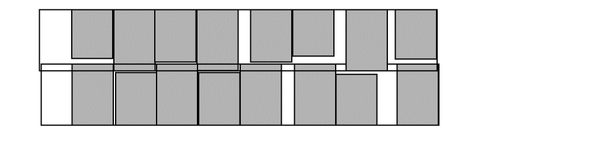
- The cells must have power pins defined so they connect when cells abut.
- If flipping of rows is allowed, you must define power to accommodate this.
Cell rows can overlap where power does not overlap.
Multiple Height Cells
The following guidelines should be used to assist you when using multiple-height cells.
- These cells have a height that is a multiple of the normal cell height.
- Define a site for each cell height.
- Rows can overlap as long as the power rails align.
- A true channel-less library, where no routing channels are needed between core cell rows, provides best placement.
- Advantages
- Disadvantages
If a cell is over twice as high, then it limits routing space between the short rows, based on the large cells abutment.
Currently, Innovus does not report utilization values that take into account overlapping rows.
Non-rectangular Blocks
If you have non-rectangular blocks, some of the area might be available for standard cell placement.
- In the LEF file use the overlap layer to describe the area that is not available for placement of other cells.
-
Otherwise, by default, the bounding box of the boundary or the
SIZEstatement in the LEF file is used for the shape of the cell. - Use Abstract Generator to translate the boundary layer into the LEF overlap layer.
Define an blockage on the OVERLAP layer in the block (megacell) over the areas that are not available for cell placement.
Summary
For an optimal design, follow these guidelines:
- Determine the routing grid for each layer.
- Try to keep pin and blockages on routing grids.
- Ensure that pins will be accessible after all connections are made.
- Keep cell size a multiple of the greatest common denominator of grids in each direction.
- Create a site for each cell height and multiple of grid minimum.
- Create place-and-route boundaries around cells.
Return to top